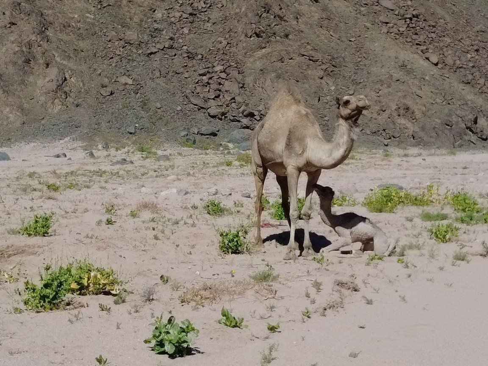
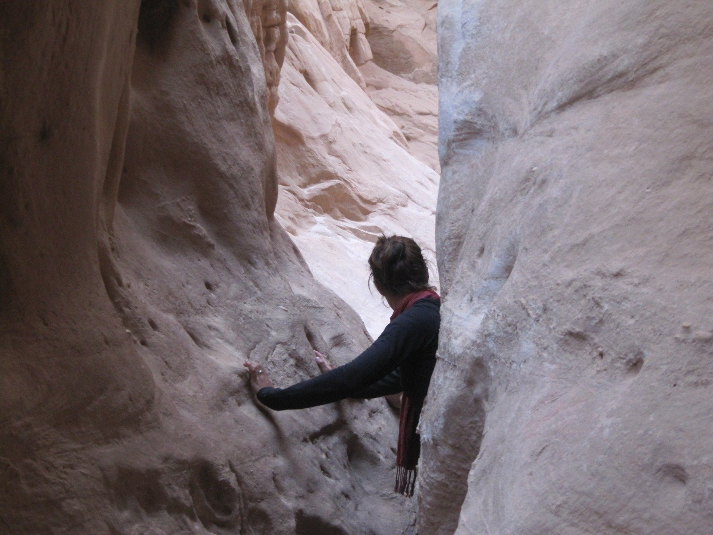
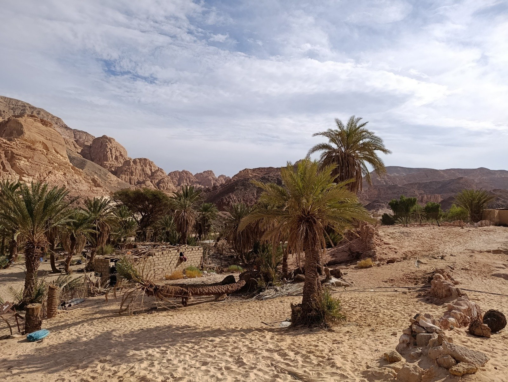

Wenn ein Tag auf dem Kamel verändert, wie Sie die Wüste sehen, verändert eine Nacht darin, wie Sie sich an sie erinnern. Diese zweitägige Kameltour ab Dahab verbindet Canyonwanderungen, alte Inschriften, eine Nacht im Camp am Eingang des Closed Canyon und ein Mittagessen in der Oase Ein Hudra, die ganze Zeit im Tempo der Wüste. Joseph und Annet führen gemeinsam, begleitet von einem einheimischen Beduinen-Kamelführer und seinen Kamelen.

Tag 1: Vom Hotel zu einem Camp in den Canyons
Abholung im Hotel um 8:00 Uhr und Fahrt landeinwärts ins Wadi Ghazalah, wo Ihr Kamel und Ihr Kamelführer warten. Ein Kamelritt und eine Canyonwanderung bringen uns zum Hamata Canyon, gefolgt von einem frischen Mittagessen in der Wüste. Von dort reiten wir nach Naqb el Hamidat, einem alten Bergpass, wo wir absteigen und neben den Kamelen hergehen, vorbei an Felsinschriften von Kreuzfahrern und frühen Beduinen: ein Gästebuch aus Stein. Ein letzter Ritt bringt uns zum Camp am Eingang des Closed Canyon, wo das Abendessen über dem Feuer zubereitet wird, unter einem Himmel ganz ohne Lichtverschmutzung.

Ein Gästebuch aus Stein, und Joseph und Annet wissen, wie man es liest.
Tag 2: Der Closed Canyon, die Oase & der White Canyon
Nach dem Frühstück im Camp wandern wir in der Morgenkühle durch den Closed Canyon, einen der eindrucksvollsten engen Canyons des Sinai. Tee am Feuer, während Auto und Kamele beladen werden, dann bringt uns ein Kamelritt zur Oase Ein Hudra, einer der ältesten und schönsten des Sinai, zum Mittagessen unter Palmen. Danach wandern wir durch den White Canyon, dessen helle, enge Wände zu den meistfotografierten im Sinai gehören, bevor uns ein letzter Kamelritt zur Straße bringt und wir zurück nach Dahab fahren.


Inklusive
- Abholung & Rückfahrt in Dahab
- Kamelritt mit einheimischem Kamelführer
- Alle Mahlzeiten & Getränke, inkl. Abendessen, Frühstück & Mittagessen
- Wüstencamp mit Übernachtung am Closed Canyon
- Ihre Wüstenguides
- Alle Eintrittsgebühren
Nicht inklusive: Trinkgelder und persönliche Ausgaben.
Bitte mitbringen
- Gute Wanderschuhe
- Lange, bequeme Hose: angenehmer beim Kamelreiten als Shorts
- Warme Kleidung: Wüstennächte werden kalt
- Ihren Reisepass (Kontrollpunkte auf den Straßen im Landesinneren)
- Etwas Bargeld für Souvenirs von den Beduinen vor Ort
Preis
600 € pro Auto, bis zu 4 Personen, beide Tage
200 € p. P. Kamel & Kamelführer, beide Tage
Ein Paar zahlt 1.000 € für die zwei Tage, eine Vierergruppe 1.400 €. Mehr als vier? Schreiben Sie uns per WhatsApp.
Nur einen Tag Zeit?
Unser eintägiger Kamelausflug führt zum Hamata Canyon und zurück, mit Canyonwanderung und Mittagessen in der Wüste dazwischen.
Zum Kamel-Tagesausflug